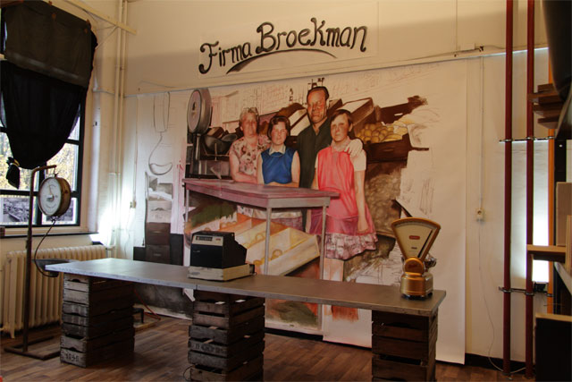
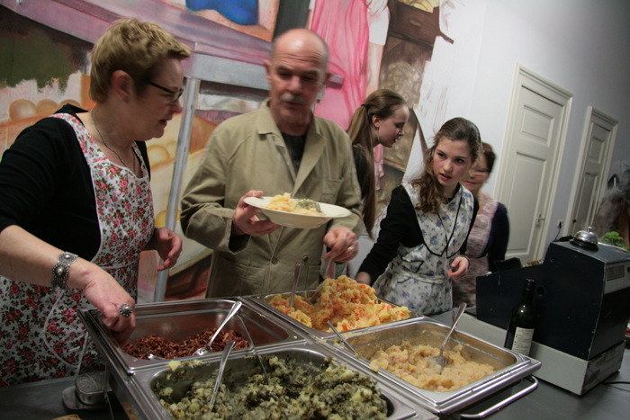

De Firma Broekman
De groentewinkel 'De firma Broekman' van mijn ouders heb ik nieuw leven ingeblazen d.m.v. een installatie met monumentale pasteltekeningen n.a.v. oude foto's van ons familiebedrijf, oude weegschalen, kassa, een toonbank, en oude groentekratten. Met mijn familie ben ik opnieuw achter de toonbank gaan staan om stamppotten te serveren. Ter gelegenheid van het 25 jarig bestaan van kunstenaarscollectief Nova zembla in 2012 was het de eerste keer dat het bedrijf tot leven kwam, en in 2014 is de installatie uitgebreid bij architectenbureau De Twee Snoeken in 's-Hertogenbosch i.v.m. het project In Tussentijd. Voor meer filmpjes en informatie over dit project kijk in hoofdstuk 3 van project In Tussentijd 'Kunst als eerste levensbehoefte'.

De Firma Broekman bij architectenbureau De Twee Snoeken in 's-Hertogenbosch in 2014.
Een installatie van pasteltekeningen, winkelinterieur, films, schilderijen.
De Firma Broekman achter de ramen, pastelkrijt op papier, 400cm x 300cm, 2014.

Gasten van de Firma Broekman krijgen stamppot geserveerd in de installatie.